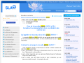
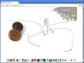

Developed a self-tracking Web application featuring many complex AJAX interfaces, interactive Flash charts, statistical tools, a backoffice with in-house CMS and advanced user-management features.
Tools : Java 6, Wicket 1.4, JPA, Hibernate 3, MySQL, Tomcat 6, TestNG, JUnit, Quartz, NginX, JavaScript, HTML, CSS, OFC2.
Designed and developed an integrated private clinic management application for Europ Assistance Internatinal Health Services in a team of 4.
Developed a transactional object synchronisation protocol to synchronize patient files between physician laptops and hospital servers with unreliable internet connections.
Tools : Java 1.6, Swing, Servlets, JPA, Hibernate 3, HSQLDB, Jetty, Maven 2, Quartz, JUnit.
Developed a Maven 2 plugin used internally to generate application intallers and client patches for version upgrades.
Tools : Java 1.5, Maven 2, Wagon-SVN, SVN, Inno-Setup.
Developed a Web portal providing information to ALS patients. The portal is also a collaborative platform for healthcare professionals working with ALS patients.
Tools : Java 1.6, Wicket 1.3, Servlets, JPA, Hibernate 3, HSQLDB, Jetty, Quartz.
Developed a software to assist physicians in genetic-diseases diagnostic. Integration and control of the logistics of blood samples through automated DNA sequencing machines in labs, lab technicians, geneticians and physicians.
Tools : Java 1.6, Swing, Hibernate 3, Tomcat 6, Quartz.
Developed a SMS notification feature and debugged form validation for this online eCRF management application for clinical trials.
Tools : Java 1.5, Wicket 1.3, Hibernate 3, Tomcat 6, Web services, JavaScript, HTML, CSS.
Developed a simple forum and file sharing tool as a Wicket plugin. Features users and groups management, file versioning and skins. Integrated in 3 Wicket-based Websites.
Tools : Java 1.5, Wicket 1.3, Hibernate 3, JavaScript, HTML, CSS.
Developed a desktop application to manage a register of patients suffering from haemophilia. Deployed in hospitals in France, Marocco and Tunisia.
Tools : Java 1.5, Swing, JDBC, MySQL, Ant.
Developed a locally served interactive map launched from a Java desktop application, with interactions between the map (in a browser) and the application through a local servlet.
Tools : Java 1.5, Swing, JDBC, Google Maps API, HTML, JavaScript, Apache HTTP Client, Jetty, Servlets.
Designed, developed and integrated a Perl OO library that enable Web crawlers to download and archive Flash embedded videos.
Tools : Perl 5, Flash reverse engineering, HTTP reverse engineering, multithreading.
Designed and developed a Firefox extension able to detect any video content in a Web page and download it.
Tools : Firefox, XUL, JavaScript.
Designed a new database schema, migrated the data, redeveloped the website and developed a backoffice, refactored maps and charts generation libraries.
Tools : PHP 5, MySQL, Smarty, HTML, CSS, RHEL4, Bash, C.
Designed a local PHP application with huge forms and complex form validation, embedded in EasyPHP.
Tools : PHP 5, MySQL, EasyPHP, NSIS, HTML, JavaScript.
Developed a modular Flash website with original user interactions.
Tools : ActionScript, Flash, XML, PHP.
{kind=link}
{kind=link}
{kind=link}
{kind=link}
{kind=link}
{kind=link}
{kind=link}
{kind=link}
{kind=link}
{kind=link}
{kind=link}
{kind=link}
{kind=link}
{kind=link}
{kind=link}
{kind=link}
{kind=link}
{kind=link}
{kind=link}
{kind=link}
{kind=link}
{kind=link}
{kind=link}
{kind=link}